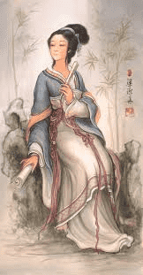

< < < Back
How To Achieve A Harmonious Marriage According To Ancient Chinese Wisdom – Return Of Kings
I am an ethnic Swede happily married (to a non-Swedish woman) with children. I believe in a creator of the Universe and I am a traditionalist who believes in the nuclear family. These beliefs qualify me as ”extreme” in Sweden despite having completed advanced studies at University.
No matter how we look at our Swedish Marxist society the statistics are horrifying. Swedish nuclear families are now under threat of extinction and 47% of all Swedes are living alone. More than 75% of Swedish kids are born without two married parents. Kids are brainwashed from a young age with emphasis on LBGT, ”feminist” values, fame and gain, free sex, evolution theory, atheism, vaccines etc. They learn nothing about important things such as how to raise a family, how to respect others, spiritual belief, traditions, culture etc.
Marxists want to destroy nuclear families and its strategy is to teach our children to selfishly fight for themselves instead of fighting for a family. Let´s look at some statistics:

We see three trends in these diagrams. Many people live alone, youngsters have poor mental health and they don´t get married and start families. I believe all these trends are connected. Why doesn’t anyone in mainstream media talk about these facts? Aren’t these important questions?
I have studied ancient Chinese culture and I believe it holds deep wisdom for how men and women should act in their daily life to achieve a harmonious family life with good health for all the family members.
Confucius said 2500 years ago:
To put the world in order, we must first put the nation in order; to put the nation in order, we must first put the family in order; to put the family in order; we must first cultivate our personal life; we must first set our hearts right.
Ban Zhao – A Feminine Icon For Traditionalists

Ban Zhao wrote a book called Lessons For Women around 2000 years ago. She taught women five lessons:
1. Humility
2. The Way Of Husband And Wife
3. Respect And Caution
4. Feminine Qualifications
5. Implicit Obedience
Humility
To put a newborn baby girl below the bed (as they did in old China) plainly indicated that she is lowly and weak, and should regard it as her primary duty to humble herself before others. To give her potsherds with which to play signified that she should practice labor and consider it her primary duty to be industrious.
The Way Of Husband And Wife
This is intimately connected with Yin and Yang. These are the two basic elements of the universe: Yin, the soft and yielding feminine element, and Yang the hard and aggressive male element. Truly it´s the great principle of heaven and Earth and the great basis of human relationships.
If a husband is unworthy, then he possesses nothing by which to control his wife. If a wife is unworthy, then she possesses nothing with which to serve her husband. If a husband does not control his wife, then the rules of conduct manifesting his authority are abandoned and broken. If a wife does not serve her husband, then the proper relationship between men and women and the natural order of things are neglected and destroyed.
Gentlemen only know that wives must be controlled…But they do not understand that husbands and masters must also be served… To only teach men and not to teach women – isn´t that ignoring the essential relation between them?..
Yin-Yang Balance
As Yin and Yang are not of the same nature, so man and woman have different characteristics. The distinct quality of the Yang is rigidity; the function of the Yin is yielding. Man is honored for strength; a woman is beautiful on account of her gentleness. Hence the old saying: “It is feared that a man born like a wolf may become a weak monstrosity; it is feared, a woman born like a mouse may become a tiger.”
Respect And Caution

If husband and wife habitually stay together… then they will lust after and take liberties with one another. From such action improper language will arise. This language may lead to licentiousness and from there will be born a heart of disrespect of the husband… If wives don´t suppress contempt for their husbands they will rebuke and scold them.
Feminine Qualifications
A woman should have four qualifications:
-
Feminine Virtue
-
Feminine Speech
-
Feminine Bearing
-
Feminine Work
Implicit Obedience
Ban Zhao mentions that a woman should never talk back or argue with her mother-in-law. Even less so with the master of the house, her husband.
When I first read Ban Zhao I felt that even though her theories sounded extreme and unbelievable to modern people, she describes how humans can imitate nature and create a natural strong attraction between spouses. In old times they really wanted to create as strong opposites as possible to create as strong attraction as possible. She claims that if women learn to serve their husbands with their hearts they will get very strong appreciation from their husbands, hence increasing the attraction and power of the marriage.
This is not about suppressing women—it is all about creating maximum attraction between husband and wife. It doesn’t matter which task you perform, what matters is if you put your heart into your task. Hence the man should be as protective as possible and respect his wife as much as possible.
So, where is the hope for a masculine man in our times? There must be something really good in this world to balance our Marxist culture. Perhaps you can achieve it by following this ancient Chinese wisdom.
Read More: Traditional Marriage Is How Past Societies Prevented Drama